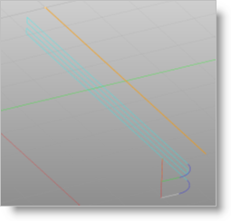

This is the type of path that the tool will follow at each Z level. Using the Linear Cut pattern the tool will always traverse in linear cuts.
Climb (Down Cut)
Select Climb (Down Cut) and the tool will be maintained in a downward motion into the stock.
")
Climb (Down Cut)
Conventional (Up Cut)
Select Conventional (Up Cut) and the direction of the tool will be maintained in an upward motion out of the stock.
")
Conventional (Up Cut)
Mixed
Select Mixed and the direction of cutting is alternated between each parallel plane. This is a mixture of both Climb and Conventional cutting of the stock.

Mixed
|
 One of the basic concepts to understand in any milling operation is
One of the basic concepts to understand in any milling operation is For Z Level Cuts
When Mixed is selected, zigzag motions are applied between step downs to eliminate tool retracts between z levels. If Climb or Conventional is selected, retract between z levels are applied. Refer to the images below:
 Climb or Conventional |
 Mixed |